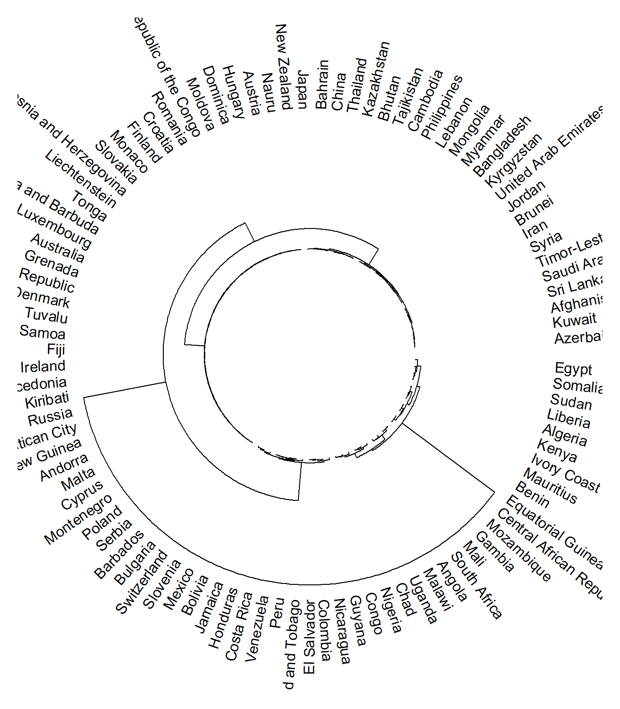
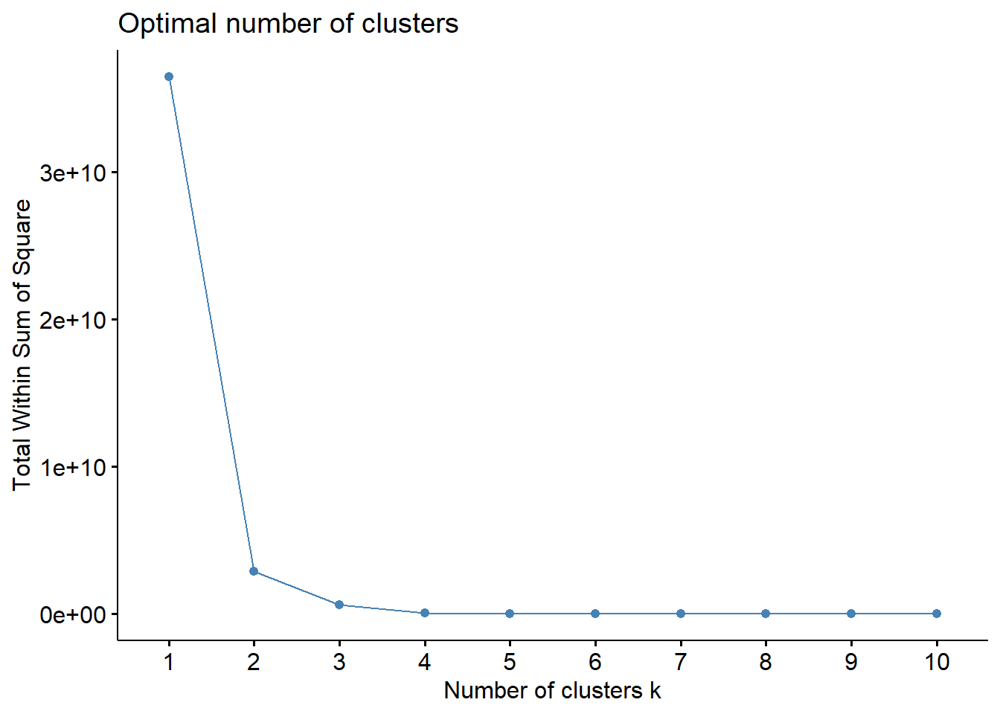
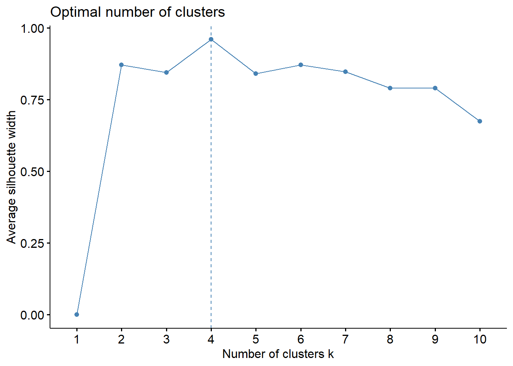
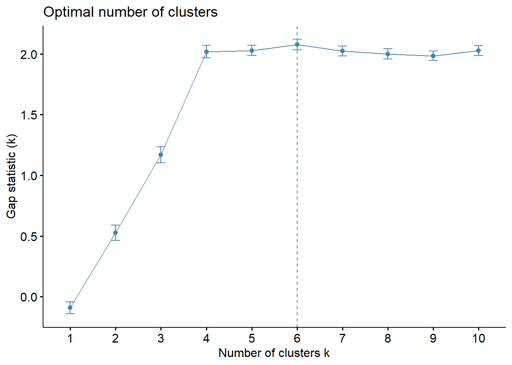
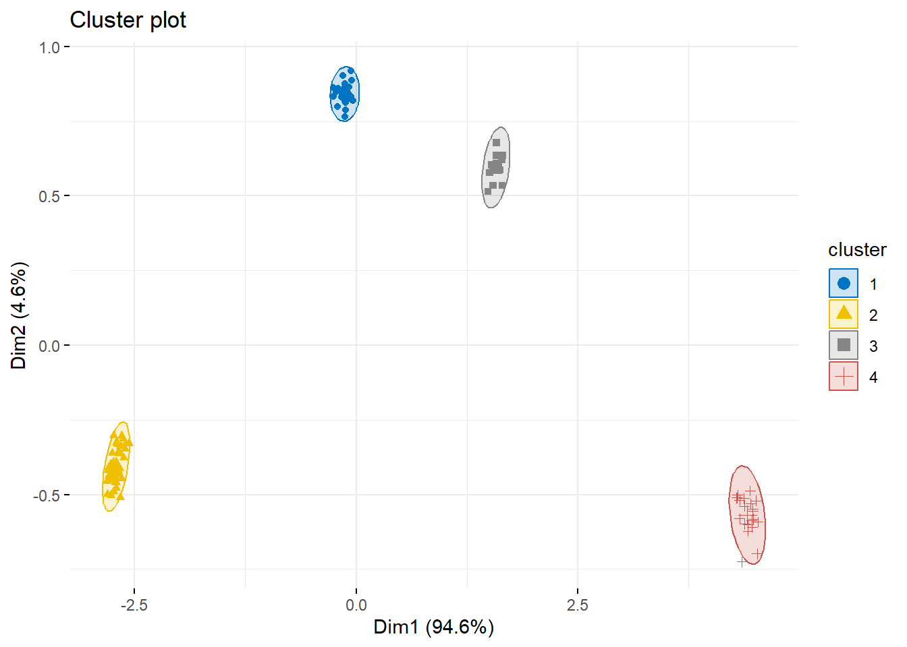

library(tidyverse)
# Indiviudos como observaciones y campos como variables de segmentacion
df <- readRDS("bd_world_health_indicators.rds") # cada registro es un pais
set.seed(135) # Establecer la semilla
df <- df[sample(nrow(df), size = 98), ]
View(df)
# Elimina missing values
df <- na.omit(df)
rownames(df) <- df$Country
df <- df %>% select_if(is.numeric)
# estandarizacion
df.std <- scale(df)Analisis Cluster
Cluster jerarquico
Cluster analysis
Multivariate analysis
Applicacion del cluster
Analisis de cluster
objetivo: los objetos/elementos del mismo cluster sean lo mas parecido entre ellos y los elementos entre clusters sean los mas diferentes posibles.
Metodos clasicos de clustering se pueden clasificar en 2 tipos :
- Procedimiento de cluster jerarquico.
- Procedimiento de cluster no jerarquico.
Metodos jerarquicos requieren una matriz de distancia/ disimilaridad, esta matriz se puede calcular de diversas formas,tipicamente se usa una medida de distancia que esta implementada en las funciones de R y se denonima la distancia euclediana.
Metodos/ algoritmos de Cluster jerarquico
- Destaca el metodo de Clusters agloremativo : El algoritmo caracteristico es AGNES (aggloramerative nesting), este es bottom-up, cada registro es una hoja, los cuales se van juntando en un nuevo cluster, hasta forma un solo cluster de todos los registros.
Cluster jerarquico en la practica (with R )
Preparacion de la bd
- los registros corresponden a los individuos y las columnas a las variables de segmentacion
- todos los datos missing deben ser o removidos o estimados de algun modo
- todas las variables han de ser escaladas, osea han de tener media = 0, desv. standar = 1
Cluster jerarquico aglomerativo
Creacion de matriz de disimilaridad
# Matriz de disimilaridad
# El primer paso es crear la matriz de disimilidaria es decir la matriz de distancias
#
d <- dist(df, method="euclidean")
# Grafico una muestra de 5 datos para visualizar la matriz de distancia
as.matrix(d)[1:5,1:5] Afghanistan Antigua and Barbuda Bolivia Kuwait
Afghanistan 0.00000 8290.348 8390.612 73.06278
Antigua and Barbuda 8290.34839 0.000 16677.256 8290.64358
Bolivia 8390.61214 16677.256 0.000 8394.02412
Kuwait 73.06278 8290.644 8394.024 0.00000
Japan 405.08014 7995.014 8705.635 360.09107
Japan
Afghanistan 405.0801
Antigua and Barbuda 7995.0138
Bolivia 8705.6347
Kuwait 360.0911
Japan 0.0000Ejecucion de cluster jerarquico
## con complete linkage
hc1 <- hclust(d, method = "complete" )Grafico de dendograma preliminar
library(dendextend) # mas herramientas para objetos dendgroam
library(circlize) # los cuales tienen por funcion por defecto
dd <- as.dendrogram(hc1) # funcion nativa, para tranforma la data a clase dedrograma
# ideal para el grafico
dd %>%
circlize_dendrogram(dend_track_height = 0.5,
facing = "inside")
Determinar el numero optimo de clusters
Una vez ejecutado el algoritmo de clusterizacion, se visualiza varios clusters, por lo que el siguiente paso es detectar cual seria el numero de clusters ideal (K)
Métodos directos
- El objetivo es correr el algoritmo de cluster para distintos numeros de clusters (k) y proceder al calculo del within sum of square(WSS), la idea seleccionar el numero de clusters a partir del cual escoger un cluster más no mejora la suma de cuadrados
#install.packages("factoextra")
library(factoextra)
df %>%
fviz_nbclust(FUN = hcut, method = "wss")
- el metodo “elbow” sugiere que el numero optimo son 4 clusters
Indican cuan bien cada elemento de un cluster esta dentro de su cluster
Un ancho (width) de silueta mayor indica un buen proceso de clusterizacion
El numero optimo de clusters (k), es igual a aquel que maximiza el promedio de la silueta sobre un rango posible de valores de K.
df %>%
fviz_nbclust(FUN = hcut, method = "silhouette")
- El metodo de silueta sugiere que 4 son el numero optimo de clusters a realizar.
Método de testeo estadistico
Metodo de estadistico GAP
el estadistico garp mide la dispersion dentro de cada Cluster comparada con una distribucion uniforme de valores.
mas alto el estadistico Gap mas diferente de una distribucion uniforme es la distribucion interna de los datos en los clusters.
library(cluster)
gap_stat <- df %>%
cluster::clusGap( FUN = hcut, nstart = 25, K.max = 10, B = 50)
fviz_gap_stat(gap_stat)
- Este metodo sugiere que 6 son los clusters necesarios .
Creacion de Clusters
Se establecieron de 4 a 6 clusters, procedemos a asignar cada registro a un cluster determinado
clts_grps_4 <- cutree(hc1, k = 4)
length(clts_grps_4)[1] 98clts_grps_6 <- cutree(hc1, k = 6)
length(clts_grps_6)[1] 98Validacion de clusters
Queda claro que el numero de clusters optimo, es 4 o 6, por lo cual procedos a emplear metodos de validacion espaciales para clusters para detectar finalmente cual numero se ajusta mejor a los datos
Validacion interna
- Un indice claro es el dunn index, el cual debe ser el maximizo posible
library(fpc)
cl_sts_4 <- cluster.stats(d = d, clts_grps_4)
cl_sts_6 <- cluster.stats(d = d, clts_grps_6)
cl_sts_4$dunn[1] 1.859057cl_sts_6$dunn[1] 0.312669- Queda claro que 4 clusters es el numero ideal de clusters
Cluster final
# Visualiazacion del cluster jerarquico
factoextra::fviz_cluster(list(data = df,
cluster = clts_grps_4),
ellipse.type = "norm",
geom = "point",
palette = "jco",
ggtheme = theme_minimal())